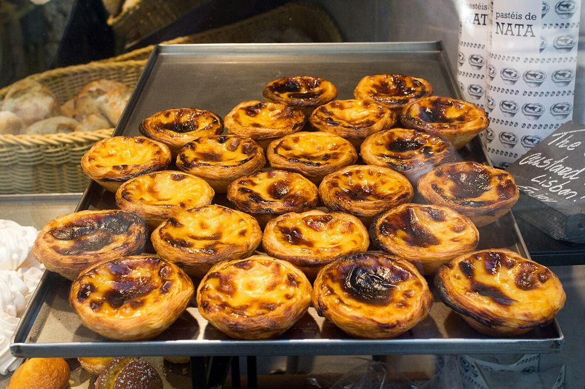

Pastéis de Belém
La pâtisserie historique des pastéis de nata. La file de vente à emporter avance vite ; les salles intérieures permettent souvent de s'asseoir plus rapidement.


Ce que les enfants vont aimer
Goûte un pastel de nata, un petit flan croustillant encore tiède.
La file au comptoir de vente à emporter est longue ; la salle à l'intérieur est souvent plus rapide.
Autour du lieu
Toilettes, tables à langer, aires de jeux, eau potable, pharmacie et station les plus proches, avec le temps de marche.
- Toilettes : WC Público Automatizado, à 1 min à pied (50 m) · payant
- Toilettes : Toilettes publiques, à 5 min à pied (180 m)
- Table à langer : Santini Belém, à 10 min à pied (370 m) · accès fauteuil
- Aire de jeux : Parque Infantil do Jardim Vasco da Gama, à 3 min à pied (130 m)
- Aire de jeux : Aire de jeux, à 15 min à pied (570 m)
- Eau potable : Point d'eau potable, à 3 min à pied (130 m) · gratuit
- Pharmacie : Farmácia dos Jerónimos, à 1 min à pied (30 m)
D'après OpenStreetMap, non vérifié sur place.
À combiner dans la journée
Monastère des Hiéronymites
Dans l'église se trouve le tombeau de l'explorateur Vasco de Gama.
À 8 min à pied (320 m) · 6–17 ans
Musée national des Carrosses
Des carrosses de rois et de reines, couverts d'or.
À 11 min à pied (410 m) · 5–17 ans
Monument aux Découvertes
Marche sur une carte du monde géante dessinée sur le sol.
À 13 min à pied (480 m) · 4–17 ans
Questions fréquentes
Pastéis de Belém : à partir de quel âge ?
Nous le conseillons de 0 à 17 ans. Goûte un pastel de nata, un petit flan croustillant encore tiède.
Pastéis de Belém : combien de temps prévoir ?
Environ 30 min sur place, sans compter le trajet.
Pastéis de Belém : quand y aller pour éviter la foule ?
La file au comptoir de vente à emporter est longue ; la salle à l'intérieur est souvent plus rapide.
Pastéis de Belém : peut-on y aller avec une poussette ?
Poussette possible, à anticiper. Beaucoup de rues pavées autour; 9 escaliers recensés à moins de 250 m, souvent contournables.
Pastéis de Belém : comment y aller ?
Rua de Belém, 84-92, 1300-085 Lisboa. Tram 15E, arrêt Mosteiro Jerónimos.
Fiche vérifiée le 29 octobre 2026. Horaires, tarifs et conditions d'accès changent souvent : vérifiez toujours sur le site officiel avant de partir. Tous les lieux de Lisbonne avec des enfants.